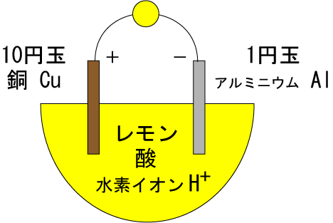

電池の世界観です。
機械に詳しい父親の話を参考にしています。
電池とは、電気を溜めておく装置。
電池は+と-になっていて、-から+の方へと電子が流れるようになっている。
電子の流れを電流と言い、電子を流そうとする強さのことを電圧と言う。
ダムで言えば、ダムの高いところから低いところへと水が流れると、エネルギーが発生するが、電池の場合、-から+へと電子が流れることで、電流が発生する。水流が電流であり、水の強さが水圧、電子の強さが電圧である。
電池によって、エネルギーを別の形態に変えられる。たとえば豆電球を使えば光が発生し、モーターを繋げば運動が発生する。
電圧の単位のことをボルトと言う。
電流の実験をするには、テスター（電流計・電圧計のこと）を使って、電池に+と-の同線を繋げる。電流が発生すれば、その電圧を計測できる。
電池は、ボルタという人が発見した。ボルタの電池を再現した場合、レモンがあれば、レモンを二つに切って、その切り口に10円玉と1円玉をずぶっと刺して、10円玉にテスターの+、1円玉にテスターの-を接続すると、電流が発生する。

これは、レモンに電解質である酸が含まれており、酸には水素イオンH+が含まれており、銅CuはHよりもイオン化傾向が弱く、アルミニウムAlはHよりもイオン化傾向が強いため、Alがイオン化してAlに電子eが電離して溜まり、その電子eがCuへと流れ出して、電流が流れ、水素イオンH+が電子eを吸収して水素Hに戻り、水素ガスH2を発生させながら電流が流れるからである。
この小難しい文章を理解するためには、いくつかの基本を理解しなければならない。
原子は、原子核の周りを電子が回るという構造をしている。原子核は陽子と中性子でできており、陽子の数で元素の種類が決まる。陽子が1つのものは水素、2つのものはヘリウムである。
陽子は、簡単にはバラバラにできない。だが、陽子1の水素を陽子2のヘリウムに融和させて変換することでエネルギーを発生させることができる。これを核融合と言う。また、ウランやプルトニウムの原子核に中性子をぶつけると、これらの原子核は分裂して別々の物質になる。この時にもエネルギーを発生させることができる。これを核分裂と言う。
そして、基本的に陽子の数と同じだけ、原子核の周りを電子が回っている。陽子は+、電子は-の電気を帯びていて、通常は±0になっている（ここで陽子を+、電子を-としたため、-の方向から+の方向へ電子が移動するという、直観とは逆の流れの方向が決まってしまった）。
銅Cuは29個の陽子と電子でできている。アルミニウムAlは13個の陽子と電子でできている。
レモンの中には酸が含まれており、これが電解質の役割をする。電解質の中にアルミニウムのような物質をつけると、なんと電子eが原子から電解質の中に電離して飛び出すのである。
その結果、電子と陽子の数が不釣り合いになり、アルミニウムAlは+の電気を帯びる。アルミニウムAlはイオン化してアルミニウムイオンAl+となる。
イオン化傾向とは、イオンへのなりやすさのこと。
イオン化傾向の大きいものは、電子が電離しやすい。逆に、イオン化傾向の小さいものは、簡単には電子が電離しない。
イオン化傾向の大きいものから小さいものを並べると、大きい方から
大 ← Ca Na Mg Al Zn Fe Ni Pb H Cu Hg Ag Pt Au → 小
となる。
2025.02.22編集
話をボルタの電池に戻そう。電解質であるレモンの酸の中にはH+がたくさん含まれている。これに対して、CuはHよりもイオン化傾向が小さく、AlはHよりもイオン化傾向が大きい。
AlはHよりもイオン化傾向が大きいため、AlをHにつけると、イオン化してAl+となる。この時、Alの中には電子eがあふれ出す。
逆に、Cuはイオン化傾向が小さい。
この状態で、AlとCuを-と+で繋げると、Al(-)からCu(+)へと電子eの移動が起きる。これが電流である。
また、Cuにeが到達した時点で、CuよりもH+の方がイオン化傾向が大きく、H+は電子が欠けた状態であるため、H+はCuから電子eを取り込んでHへと戻る。水素Hは水素ガスH2となって、空気中へと放出される。
このように、イオン化傾向の違う金属を電解質の中につけて、イオン化傾向の大きいものからイオン化傾向の小さいものへと電子が-から+の方向に流れることで、電池が成り立つ。これが、ボルタの電池の原理である。
電池には、マンガン電池、アルカリ電池、あるいはニッカド電池（ニッケル・カドミウム電池）のようなものがある。
リチウムイオン電池は、スマホなどに使われていることで有名。
電解液の中でリチウムイオンが正の極と負の極に流れて移動することで充電と放電が行われる。
後日注記：スマホなどに使われているリチウムイオン電池は膨張や発火の危険性があります。充電ケーブルを差したまま長期間放置せず、ネットや店舗などのリコール情報を見るようにしましょう。また、純正の正規品でない充電方法を行うのは避け、落とすなど外部からの衝撃を与えないようにしましょう。
（「リチウムイオン電池とは何？Weblio辞書 - 実用日本語表現辞典」を参考に執筆しました。）
2025.10.12編集